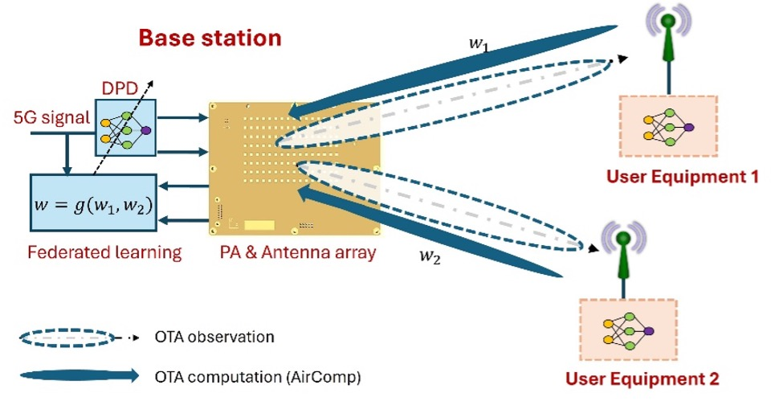

Siqi Wang
Feb. 2026 - Jan 2030, AICom: Auto-linearization system of integrated communication and computation system
It is crucial for 6G networks to incorporate self-automation capabilities, as the demand for intelligence in every facet of communication is higher than ever. A fully realized "Internet of Everything" (IoE) in 6G requires more than just communication services. To provide solutions tailored to the needs of smart cities, autonomous vehicles or the Metaverse, telecommunication systems must introduce, among other enhancements, self-automation and self-correction capabilities at all levels. This project aims to integrate artificial intelligence (AI) techniques into telecommunication networks to enhance the linearization of the Radio-Frequency (RF) transmitters.
